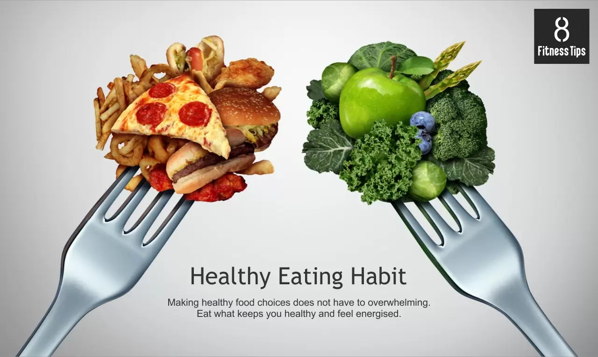

Healthy Eating Tips
In the pursuit of a vibrant and fulfilling life, fostering healthy eating habits stands as a cornerstone. Nourishing our bodies with wholesome, nutrient-rich foods is not merely a choice; it is a profound commitment to self-care. Embracing a diet abundant in fruits, vegetables, lean proteins, and whole grains provides the essential nutrients our bodies need to thrive. These nourishing choices empower us to maintain optimal physical health, boost energy levels, and fortify our immune systems. By cultivating a mindful approach to our daily meals, we forge a path to sustained vitality and well-being.
Healthy eating extends beyond the physical realm; it intertwines with our mental and emotional equilibrium. The connection between nutritious choices and mental clarity is undeniable. Consuming a balanced diet enhances cognitive function, supports emotional resilience, and fosters a positive mindset. As we embark on the journey of cultivating healthy eating habits, we not only savor the delicious flavors of wholesome foods but also embark on a transformative voyage towards a more energized, focused, and emotionally resilient version of ourselves. Through mindful nourishment, we lay the groundwork for a holistic well-being that radiates from the inside out.